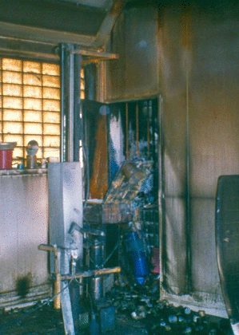

Bei Bränden von PVC-haltigen Materialien muss, zumindest bei bestimmten Brandtemperaturen oder unter bestimmten Brandbedingungen (z.B. Schwelbränden), mit der Entstehung von Dioxinen und Furanen gerechnet werden. Diese Substanzen weisen besondere Gefährdungspotenziale auf.